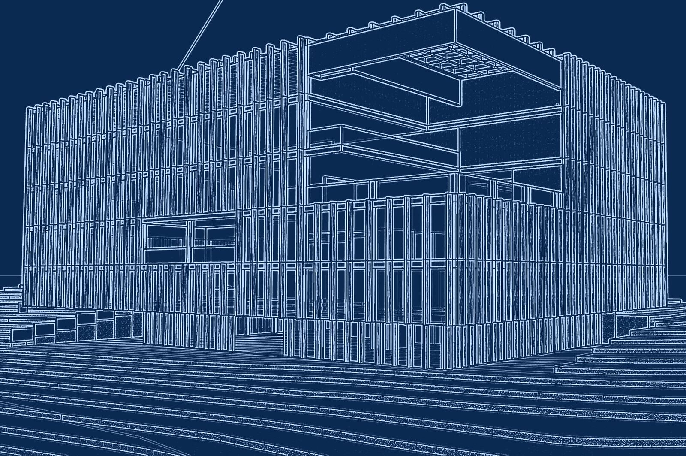
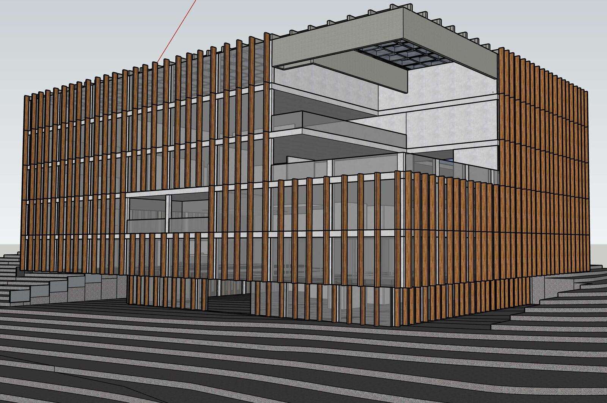
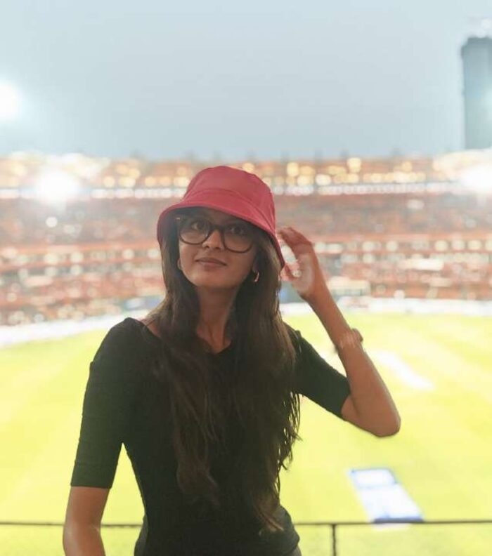

Architectural portfolio · B.Arch 2019–2024
Jahnavi
Bathala
Efficient buildings, restored histories, and jaali screens that open onto quiet courtyards.


Selected work
Eight projects, from a half-acre apartment block to a 32,374 sqm craft haat.
Design thesis · AAR 522 · April 2024
Warangal Urban Haat
Artisan Bridge: connecting crafts and communities
A community development centre for handicrafts and handlooms. It gives local artisans a place to train, exhibit and sell, and gives visitors a reason to stay, so that skills, markets and heritage meet on one site.
The plan grows from a radial grid: curved rows of stalls ring a central open-air theatre, with a happy street, food court, workshops, exhibition space and accommodation set around them. It focuses on Pochampally handlooms, Kondapalli handicrafts and puppetry.
Seven chapters, 25 sheets
Where the area goes
| Space | Area, sqm | Share |
|---|
Programme 11,414 sqm of 32,374 sqm total area. Shares are of the programme.

About
Architecture that remembers where it comes from.
I design efficient buildings, restore historic structures, and work intricate jaali screens and tranquil courtyards into my plans.
I work well in teams and value the different perspectives each person brings, and I pick up new concepts quickly. What drives me is a deep appreciation for the history and cultural significance woven into the fabric of architecture. Along the way I have built 3D models and renders with full sets of plans, sections and elevations, and detailed physical models to carry the design across.
Interests
- Designing efficient buildings
- Historic building restoration
- Jaali works and courtyards
Education
- Bachelor of Architecture2019–2024 · GITAM School of Architecture
- Intermediate2017–2019 · Sri Chaitanya Junior College
- SchoolingVikas, The Concept School
Digital skills
Creative skills
Experience
Contact